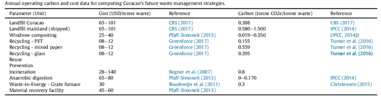
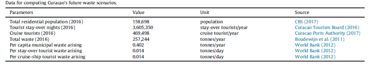
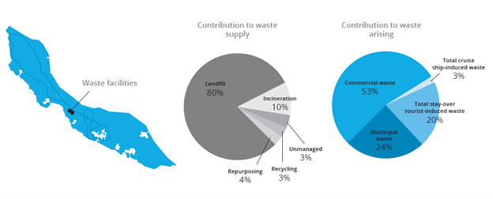
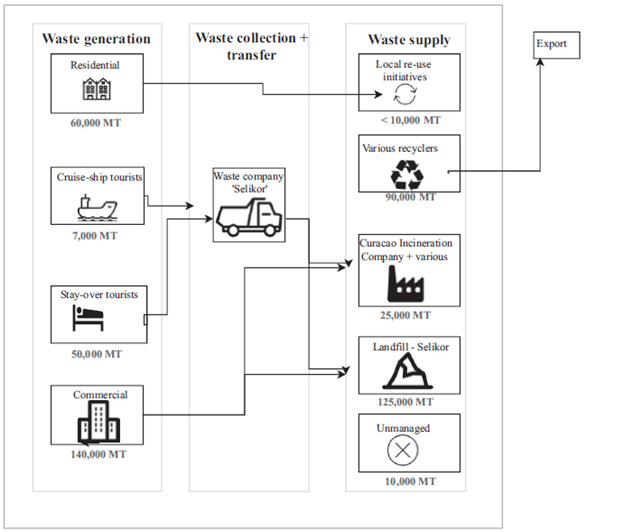

Mini-lecture 3.4 presents a case study on collecting infrastructure data for performance evaluation using the island of Curaçao. The mini-lecture outlines the data collection method utilised in Curaçao’s most recent infrastructure development assessment and provides examples of the infrastructure data inputted.
This case study provides a look into infrastructure planning conducted for the island of Curaçao in 2018 (Adshead et al. 2018). The case study focuses on the island’s solid waste system as elaborated by Fuldauer et al. (2019).
Curaçao is a Small Island Developing State (SIDS) located off the coast of Venezuela. The island’s main economic activity is tourism. While home to only 150,000 residents, the island welcomes 750,000 tourists to its shores annually (Fuldauer et al. 2019). The strain of this high volume of tourists on Curaçao’s infrastructure systems leads to high per-capita infrastructure costs. This, coupled with other challenges, such as fragmented planning and lack of adequate data management systems, make sustainable infrastructure development, particularly in the solid waste system, a challenge for the island (Fuldauer et al. 2019).
The following sections detail the steps taken to collect the waste infrastructure data needed to evaluate the performance of the existing system. The results for the evaluation feed into scenario planning and strategy development in the balance of the evidence-based infrastructure development process employed.
Data on Curaçao’s solid waste system was obtained from two main sources and complemented by other resources: the Central Bureau of Statistics Curaçao and the Waste Management Processing Plant Curaçao Design Feasibility Study. The data collected, or estimated, covered municipal solid waste as well as commercial, stay-over tourist-generation, and cruise-ship tourist-generated waste. The data collected specified the capacity, cost, and carbon emissions of infrastructure assets. Additional information on the population and per capita waste production were collected to compute Curaçao’s future waste system’s needs. Tables 3.4.1 and 3.4.2 illustrate the core data collected (Fuldauer et al. 2019).
Table 3.4.1: Core data collected on waste infrastructure assets’ capacity and cost (Fuldauer et al. 2019)

Table 3.4.2: Population and per capita data collected on Curaçao’s waste sector (Fuldauer et al. 2019)


Figure 3.4.1: Graphical depiction of Curaçao’s solid waste sector (Adshead et al. 2018)
As seen in the tables, care was taken to document the source of information to ensure data transparency. Some data was locally sourced while other data was sourced from international studies. For example, the number of tourist stay-over nights were sourced locally from documentation by the Curaçao Tourism Board, while the per capita municipal waste value was obtained from the World Bank. The study indicated an average per capita waste generation in the Caribbean of 1.1kg/capita/day (Fuldauer et al. 2019).
Fuldauer et al. (2019) also reported that the most up to date data was obtained along with the lifespans of infrastructure assets. For example, the design life of Curaçao’s only landfill will end by 2026 (Adshead et al. 2018).
Stakeholder consultation was conducted to complement the data obtained from the desktop study. The desktop study brought about a list of key stakeholders. 20 priority stakeholders were specified based on their organisation, and level and field of education (Fuldauer et al. 2019). The most influential actors were found to be:
Stakeholders were engaged to provide context for the waste sector and fill any data gaps via semi-structured stakeholder interviews. The broad range of stakeholders enabled the researchers to capture a wide variety of views. Most of the stakeholders agreed that Curaçao’s existing waste sector is unsustainable and action is particularly required to ensure environmentally safe recycling practices and disposal of chemical waste.
The data collected and the insights gained from the stakeholders surveyed resulted in the map of the existing waste management system shown in Figure 3.4.2 below. As seen in the diagram, Curaçao generated 257,000 million tonnes of waste, in decreasing order, by commercial entities, residential homes, stay-over tourists and cruise-ship tourists. Only tourists’ waste was collected by the island’s sole waste company Selikor. Most of the island's waste was disposed of in the landfill. The balance of the waste, in decreasing order, was recycled, incinerated, reused or exported.

Figure 3.4.2: Curaçao’s existing waste management system; MT=million tonnes (Fuldauer et al. 2019)
Mini-lecture 3.4 provided an insight into the application of the principles laid out in mini-lectures 3.1- 3.3 to a specific country context. The mini-lecture provided useful insights on data collection and stakeholder engagement from an infrastructure development perspective of the waste sector in the island of Curaçao.